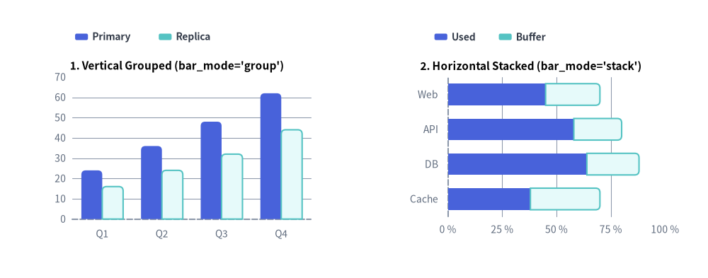
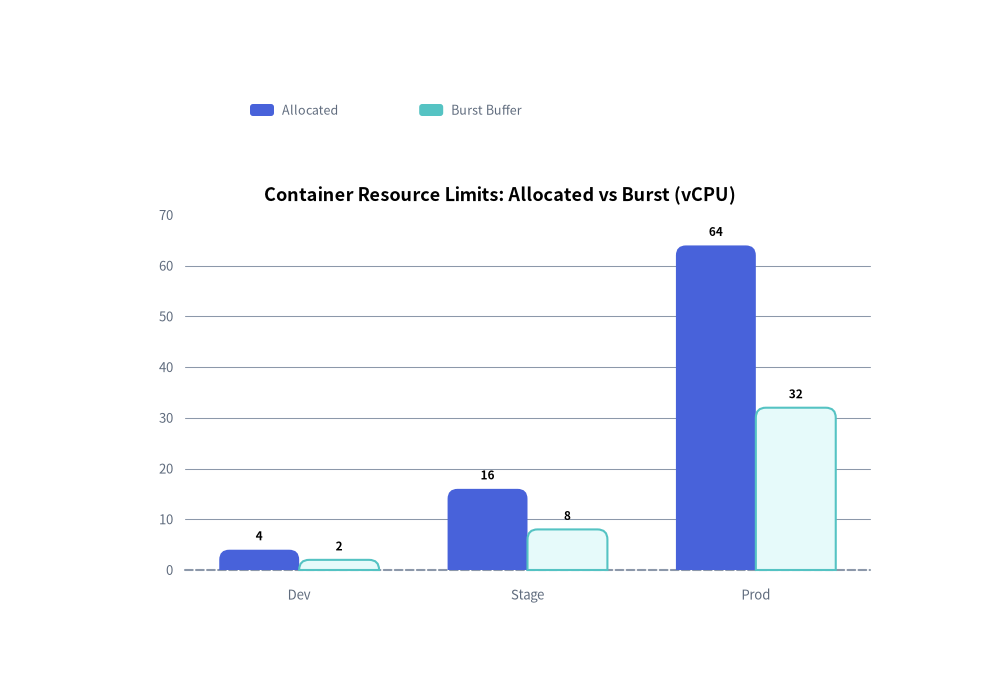
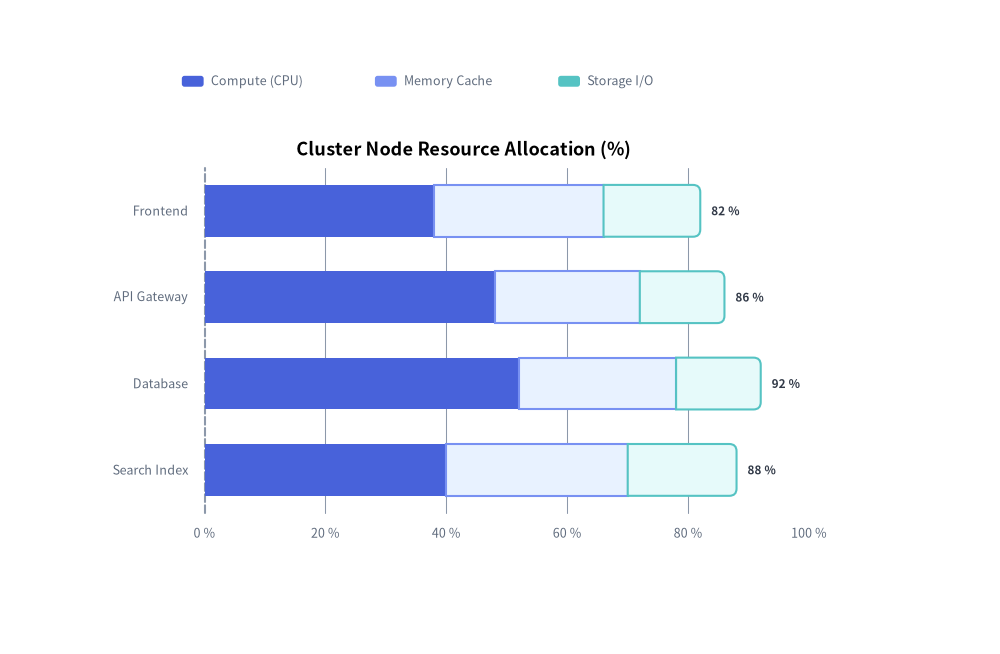

BarChart: Vertical, Horizontal, Grouped & Stacked Bars
The BarChart component (drawlib.charts.bar) renders vertical columns or horizontal bars for comparing discrete categorical metrics across one or more series. It supports side-by-side grouped clusters, cumulative stacked bars, outer-tip corner rounding (bar_r), inline value annotations, orientation-aware axis properties, and decoupled legend rendering.
1. Overview & Topologies

Source Code
from drawlib.canvas import save, setup
from drawlib.charts.bar import BarChart
from drawlib.styles import Styles
setup(width=132, height=52)
# Left: Vertical Grouped (orientation="vertical", bar_mode="group")
vert_chart = BarChart(
categories=["Q1", "Q2", "Q3", "Q4"],
axis_line_style=Styles.MutedDashed,
axis_text_style=Styles.Muted.patch(text_size=10.0),
grid_style=Styles.MutedThin,
width=56.0,
height=36.0,
orientation="vertical",
bar_mode="group",
bar_r=0.8,
title="1. Vertical Grouped (bar_mode='group')",
title_style=Styles.BlackBold.patch(text_size=11.0),
)
vert_chart.add_series("Primary", [24.0, 36.0, 48.0, 62.0], style=Styles.PrimaryFlat)
vert_chart.add_series("Replica", [16.0, 24.0, 32.0, 44.0], style=Styles.SecondaryNeutral)
vert_chart.draw(xy=(5.0, 6.0))
vert_chart.draw_legend(xy=(14.0, 45.0), text_style=Styles.DarkBold.patch(text_size=10.0), orientation="horizontal")
# Right: Horizontal Stacked (orientation="horizontal", bar_mode="stack")
horiz_chart = BarChart(
categories=["Web", "API", "DB", "Cache"],
axis_line_style=Styles.MutedDashed,
axis_text_style=Styles.Muted.patch(text_size=10.0),
grid_style=Styles.MutedThin,
width=56.0,
height=36.0,
orientation="horizontal",
bar_mode="stack",
bar_width_ratio=0.62,
bar_r=0.8,
title="2. Horizontal Stacked (bar_mode='stack')",
title_style=Styles.BlackBold.patch(text_size=11.0),
)
horiz_chart.add_series("Used", [45.0, 58.0, 64.0, 38.0], style=Styles.PrimaryFlat)
horiz_chart.add_series("Buffer", [25.0, 22.0, 24.0, 32.0], style=Styles.SecondaryNeutral)
horiz_chart.configure_x_axis(min_value=0, max_value=100, tick_step=25, unit="%")
horiz_chart.draw(xy=(71.0, 6.0))
horiz_chart.draw_legend(xy=(81.0, 45.0), text_style=Styles.DarkBold.patch(text_size=10.0), orientation="horizontal")
save()
orientation:"vertical"(default): Columns grow upward from the bottom X-axis (y_axisis the value axis,x_axisis the category axis)."horizontal": Bars grow rightward from the left Y-axis (x_axisis the value axis,y_axisis the category axis).
bar_mode:"group"(default): Side-by-side clustered bars for comparing distinct series within each category bin."stack": Accumulates series vertically or horizontally to show cumulative totals and part-to-whole breakdowns.
bar_r: Corner rounding radius applied strictly to the 2 outer tip corners of each bar (for stacked bars, only the outermost segment receives tip rounding while inner segment boundaries remain flush).- Orientation-Aware Default
draw_direction:- When
add_series(..., draw_direction=None)is called without an explicit direction,BarChartautomatically selects"bottom_to_top"fororientation="vertical"(all bars grow upward from the baseline) and"left_to_right"fororientation="horizontal"(all bars grow rightward from the baseline). - Passing the orthogonal direction (
"left_to_right"on a vertical chart, or"bottom_to_top"on a horizontal chart) reveals bars sequentially category-by-category instead of growing all bars simultaneously.
- When
2. Quick Example: Vertical Grouped Resource Allocation
from drawlib.canvas import save, setup
from drawlib.charts.bar import BarChart
from drawlib.styles import Styles
setup(width=100, height=68)
chart = BarChart(
categories=["Dev", "Stage", "Prod"],
axis_line_style=Styles.MutedDashed,
axis_text_style=Styles.Muted.patch(text_size=10.5),
grid_style=Styles.MutedThin,
value_text_style=Styles.BlackBold.patch(text_size=10.0),
width=82,
height=45,
title="Container Resource Limits: Allocated vs Burst (vCPU)",
title_style=Styles.BlackBold.patch(text_size=13.0),
bar_mode="group",
bar_r=1.0,
)
chart.add_series("Allocated", [4.0, 16.0, 64.0], style=Styles.PrimaryFlat)
chart.add_series("Burst Buffer", [2.0, 8.0, 32.0], style=Styles.SecondaryNeutral)
chart.draw(xy=(9, 7))
chart.draw_legend(xy=(24, 57), text_style=Styles.Muted.patch(text_size=10.5), orientation="horizontal")
save()

3. Horizontal Bar Chart & Percentage Axis Formatting
Setting orientation="horizontal" rotates the category axis to the left Y-axis and the numerical value axis to the bottom X-axis. Combine value_format with configure_x_axis(min_value=0, max_value=100, tick_step=20, unit="%") to build clean utilization and benchmark breakdowns:
from drawlib.canvas import save, setup
from drawlib.charts.bar import BarChart
from drawlib.styles import Styles
setup(width=110, height=70)
chart = BarChart(
axis_line_style=Styles.MutedDashed,
categories=["Frontend", "API Gateway", "Database", "Search Index"],
width=84.0,
height=48.0,
orientation="horizontal",
bar_mode="stack",
bar_width_ratio=0.6,
bar_r=0.8,
title="Cluster Node Resource Allocation (%)",
title_style=Styles.BlackBold.patch(text_size=13.0),
axis_text_style=Styles.Muted.patch(text_size=10.5),
grid_style=Styles.MutedThin,
value_text_style=Styles.DarkBold.patch(text_size=10.0),
value_format="{:.0f}%",
)
chart.add_series("Compute (CPU)", [38.0, 48.0, 52.0, 40.0], style=Styles.PrimaryFlat)
chart.add_series("Memory Cache", [28.0, 24.0, 26.0, 30.0], style=Styles.PrimaryNeutral)
chart.add_series("Storage I/O", [16.0, 14.0, 14.0, 18.0], style=Styles.SecondaryNeutral)
chart.configure_x_axis(min_value=0, max_value=100, tick_step=20, unit="%")
chart.draw(xy=(12.0, 8.0))
chart.draw_legend(xy=(18.0, 61.0), text_style=Styles.Muted.patch(text_size=10.5), orientation="horizontal")
save()

4. API Reference
Constructor (BarChart)
All constructor arguments are keyword-only (*):
from drawlib.charts.bar import Axis, BarChart, DrawDirection, FormatterType, Mode, Orientation, Series
chart = BarChart(
*,
axis_line_style: Style,
width: float = 60.0,
height: float = 40.0,
categories: list[str] | None = None,
orientation: Orientation = "vertical",
bar_mode: Mode = "group",
bar_width_ratio: float = 0.7,
bar_r: float = 0.0,
axis_text_style: Style | None = None,
grid_style: Style | None = None,
value_text_style: Style | None = None,
value_format: FormatterType = None,
background_style: Style | None = None,
title: str = "",
title_style: Style | None = None,
)
| Parameter | Type | Default | Description |
|---|---|---|---|
axis_line_style |
Style |
Required | Mandatory style anchor for the coordinate baseline stroke. |
width / height |
float |
60.0 / 40.0 |
Total bounding box dimensions of the chart in canvas units. |
categories |
list[str] | None |
None |
Ordered category names along the categorical axis (e.g. ["Q1", "Q2", "Q3"]). |
orientation |
"vertical" | "horizontal" |
"vertical" |
Bar growth orientation. |
bar_mode |
"group" | "stack" |
"group" |
Multi-series arrangement mode (Mode). |
bar_width_ratio |
float |
0.7 |
Fraction of each category slot occupied by bars (0.1 to 1.0). |
bar_r |
float |
0.0 |
Corner rounding radius applied to the 2 outer tip corners of bars. |
axis_text_style |
Style | None |
None |
Style for tick labels and category names. If None, labels are omitted. |
grid_style |
Style | None |
None |
Style for background value gridlines. If None, gridlines are omitted. |
value_text_style |
Style | None |
None |
Style for numeric labels drawn outside bar tips. If None, value labels are omitted. |
value_format |
FormatterType |
None |
Format string (e.g. "{:.1f}%") or callable Callable[[float], str] for value labels. |
background_style |
Style | None |
None |
Style for the outer chart background card. If None, card is omitted. |
title |
str |
"" |
Chart title text rendered at the top of the container. |
title_style |
Style | None |
None |
Typography style for title. Required for the title to render. |
Methods & Properties
add_series(name: str, values: list[float], style: Style, legend_text_style: Style | None = None, *, show: bool = True, draw_ratio: float = 1.0, draw_direction: DrawDirection | None = None) -> Series: Registers a data series and returns the mutableSeriesinstance. Ifdraw_directionisNone, defaults to"bottom_to_top"for vertical charts and"left_to_right"for horizontal charts.configure_y_axis(...) -> Axis/configure_x_axis(...) -> Axis: Configures axis scale ("linear"or"log"), bounds (min_value,max_value), ticks (ticks,tick_step), formatting (format,unit), and title (label). See Axes, Scales & Legends.get_size() -> tuple[float, float]: Returns(width, height)of the chart container.draw(xy: tuple[float, float] = (0.0, 0.0), *, width: float | None = None, height: float | None = None, scale: float = 1.0) -> None: Renders the chart anchored at its bottom-left cornerxy, with optional one-call dimension overrides and uniform proportionalscale.draw_legend(xy: tuple[float, float], text_style: Style, orientation: Orientation = "vertical", swatch_width: float = 2.4, swatch_height: float = 1.2, item_gap: float = 4.0, *, scale: float = 1.0) -> None: Renders the decoupled series legend atxy.- Properties:
chart.series -> list[Series]: Returns a copy of registeredSeriesobjects.chart.value_axis -> Axis: Returns the active numerical axis (y_axiswhen vertical,x_axiswhen horizontal).chart.category_axis -> Axis: Returns the active categorical axis (x_axiswhen vertical,y_axiswhen horizontal).chart.x_axis -> Axis/chart.y_axis -> Axis: Direct access to the horizontal and verticalAxisinstances.